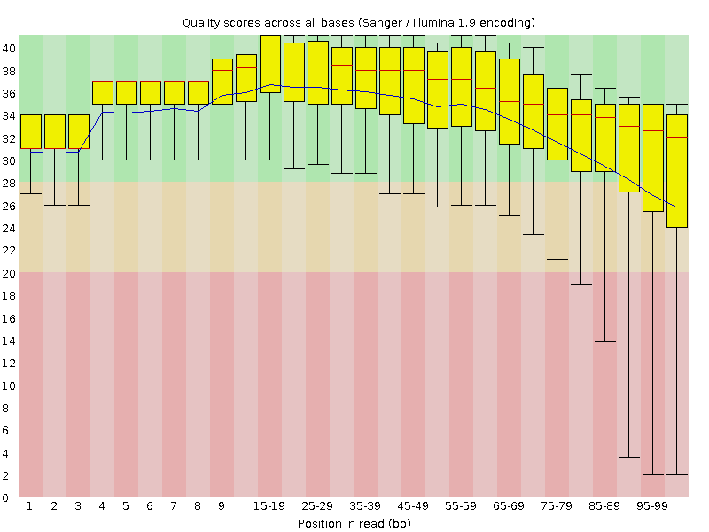
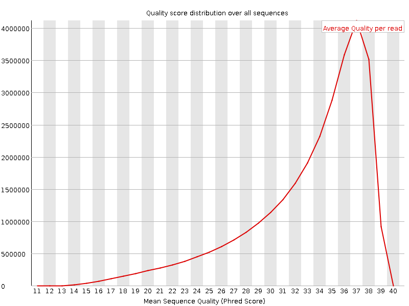
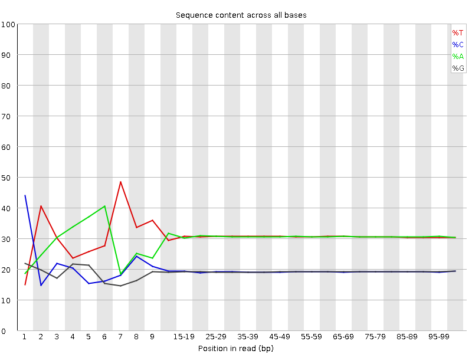
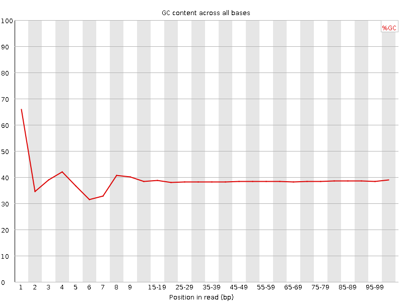
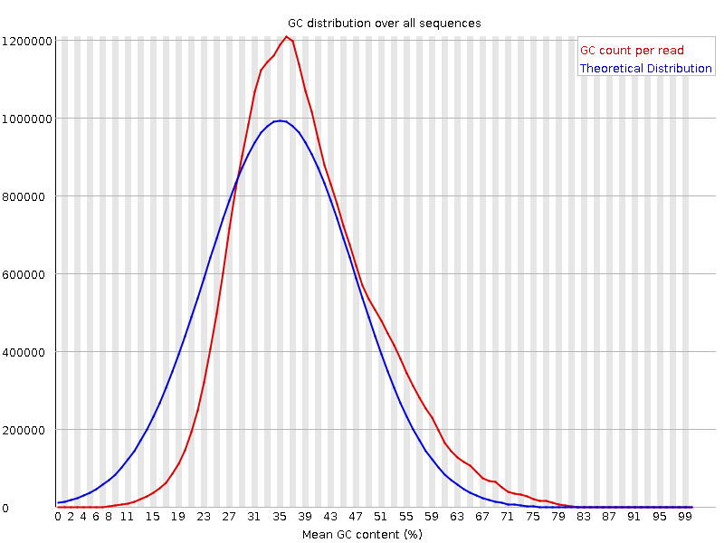
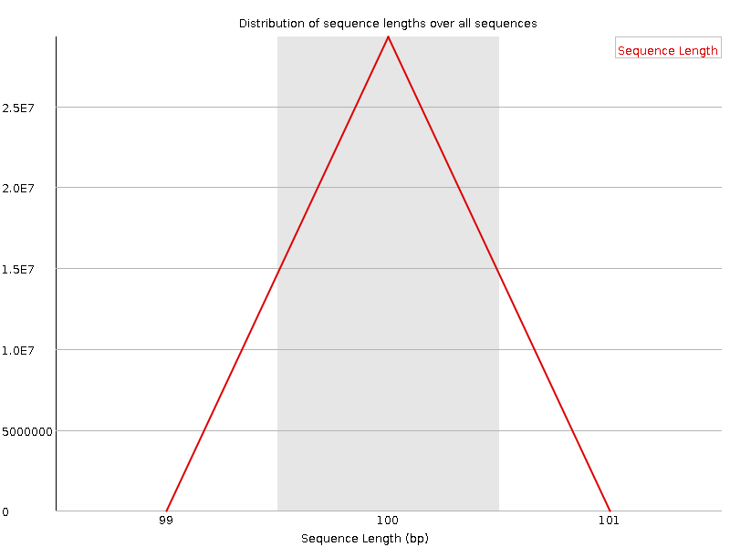
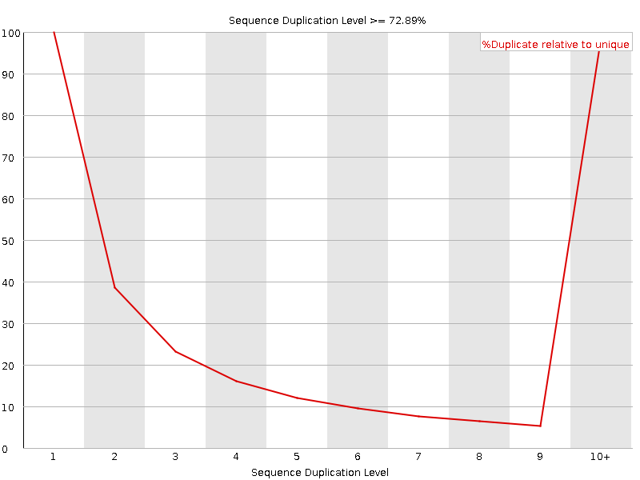
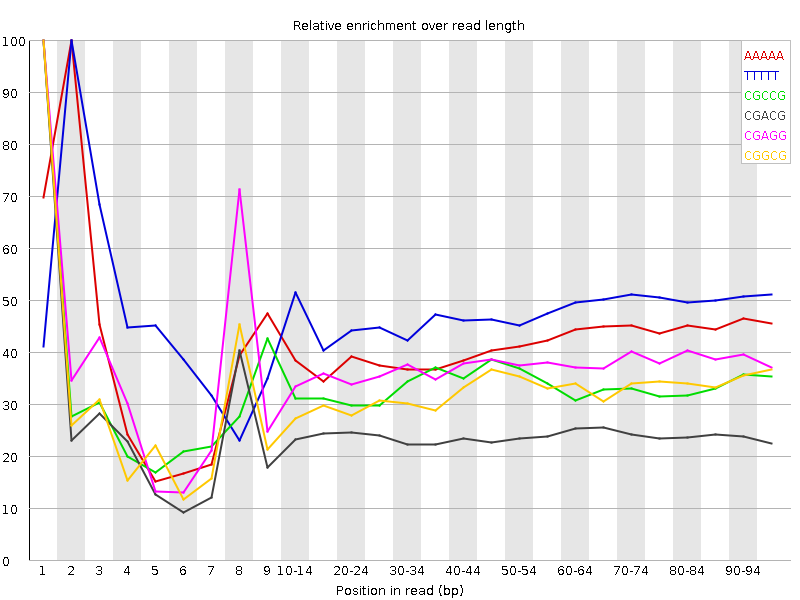

![[OK]](Icons/tick.png) Basic Statistics
Basic Statistics
| Measure | Value |
|---|---|
| Filename | t5.2.fq |
| File type | Conventional base calls |
| Encoding | Sanger / Illumina 1.9 |
| Total Sequences | 29293469 |
| Filtered Sequences | 0 |
| Sequence length | 100 |
| %GC | 38 |
Per base sequence quality

Per sequence quality scores

![[FAIL]](Icons/error.png) Per base sequence content
Per base sequence content

Per base GC content

![[WARN]](Icons/warning.png) Per sequence GC content
Per sequence GC content

Per base N content

Sequence Length Distribution

Sequence Duplication Levels

Overrepresented sequences
No overrepresented sequences
Kmer Content

| Sequence | Count | Obs/Exp Overall | Obs/Exp Max | Max Obs/Exp Position |
|---|---|---|---|---|
| AAAAA | 18543725 | 2.481722 | 5.993372 | 2 |
| TTTTT | 18581035 | 2.4134016 | 5.061279 | 2 |
| CGCCG | 1568055 | 2.0330455 | 6.0530863 | 1 |
| CGACG | 2349350 | 1.9453096 | 7.962271 | 1 |
| CGAGG | 2307325 | 1.9382176 | 5.1634326 | 1 |
| CGGCG | 1421460 | 1.8697057 | 5.7564673 | 1 |
| CTTCT | 5635565 | 1.8162909 | 5.125736 | 1 |
| CGCGG | 1311410 | 1.7249523 | 6.1332545 | 1 |
| CGCGA | 1980110 | 1.6395714 | 6.3270907 | 1 |
| TCGAG | 3092980 | 1.6258258 | 5.053353 | 7 |
| CTCGA | 3117290 | 1.6151814 | 8.231483 | 1 |
| CTTCC | 3165750 | 1.6071953 | 5.072367 | 1 |
| CTGGA | 3004770 | 1.579458 | 6.481081 | 1 |
| CTCCA | 3060185 | 1.5629283 | 6.783067 | 1 |
| CGAGA | 2947585 | 1.5587 | 5.166874 | 1 |
| CGCCA | 1898030 | 1.5491422 | 5.841471 | 1 |
| CTTTT | 7536475 | 1.5419563 | 6.222079 | 1 |
| CGATC | 2914690 | 1.5102069 | 5.2655964 | 4 |
| ATCGA | 4559410 | 1.5087175 | 5.602794 | 6 |
| CTTCG | 2857180 | 1.471575 | 6.1908574 | 1 |
| CCGGC | 1125480 | 1.4592294 | 5.365306 | 1 |
| CGAAG | 2747140 | 1.4527036 | 5.186766 | 1 |
| CTCGT | 2792145 | 1.4380791 | 7.1267514 | 1 |
| CTCGC | 1730440 | 1.4039301 | 6.44475 | 1 |
| CTTCA | 4254895 | 1.3795457 | 5.2883153 | 1 |
| CTCGG | 1625615 | 1.3380102 | 7.6273823 | 1 |
| CGAAA | 3930390 | 1.3083811 | 5.5565944 | 1 |
| GAATC | 3817645 | 1.2632661 | 5.2914367 | 4 |
| CTTGG | 2382760 | 1.2450246 | 5.6312795 | 1 |
| CTTTG | 3762105 | 1.230075 | 5.0668297 | 1 |
| CTTGA | 3639430 | 1.1971081 | 5.1307163 | 1 |